罗伯特·雷亚是20世纪50年代知名的市场技术分析师，他对牛市的三个阶段做了很好的解释。第一阶段是价格收复熊市的超跌部分——市场从深度低估到恢复正常水平；第二阶段，价格由于基本面的向好预期而继续上涨；第三个阶段，价格由于投资者狂热、乐观以及贪婪而上涨，此时人们买入的原因是“价格将一直涨下去”。雷亚对道氏理论做了很好的解释，他的理论适用于持续几年的牛市。我发现我能在较短的时间周期内运用这个理论。
我们已经讨论过移动平均体现的是投资者对股票长期价值的共识，当价格低于移动平均线并把均线往下“拽”的时候，熊市就在酝酿之中。当价格止跌，移动平均线走平时，我们需要注意熊市可能结束了。
市场就像两党制的系统，当“熊党”失势时，我们就在下届“选举”中加入“牛党”。牛市的第一个目标位是价值的位置，也就是站上移动平均线。
周线图中，在价值之下买入，把盈利目标设置在价值区，这个方法非常好用。三重过滤网系统[1]要求在周K线做出战略决策，在日K线实施，日线是做战术性买入或卖出的时间框架。
我从交易圈的朋友那里收到一幅他曾经交易过的图表，我让克里帮我分析这幅走势图，克里指出这只股票最近跌破近几年的低点并停止下跌。我看股票时通常看周线图（见图4-1）并把股票的整个历史走势都调出来，我想看看和历史价格比起来，它是便宜还是贵。
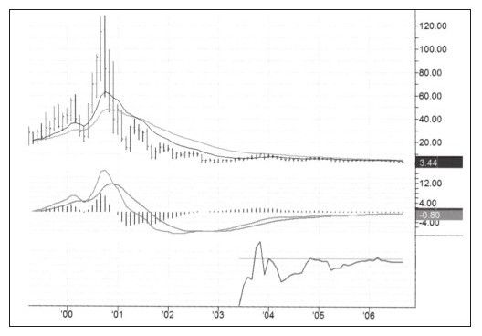
EXTR历史最高价120美元，最低价接近3美元，以3.5美元交易，绝对是一笔好交易。接着，我打开股票过去两三年的周线走势图（见图4-2），查看长期价格和指标的运行态势。从图中可以看到股价最近跌破长期支撑4.05美元，跌速变慢并且趋势由跌转平，MACD柱和强力指标走强——牛市信号。我判断周线图上的价值回归会让股票回到价值区，而价值区在3.67~3.96美元之间，也就是两条移动平均线之间的区域。
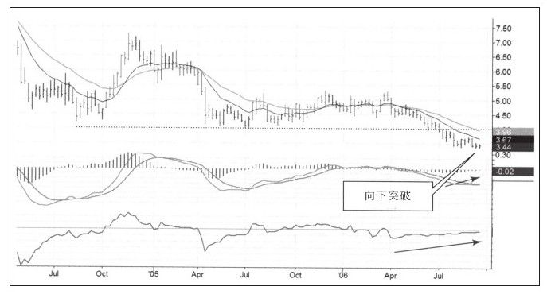
如图4-3所示，在日线图的右侧，EXTR走出了向下假突破，技术分析这是看涨信号；同时，MACD柱的底背离也印证这个看涨信号；另外强力指标也发出了最为重要的底背离信号，表明这个价格突破式下跌的动力不足。我决定做多EXTR，并把止损设在3.31美元，止盈设在3.81美元，也就是高于通道上轨的位置。从最新的收盘价到目标价的距离是37美分，到止损价的距离是13美分。收益风险比接近3:1，尽管这不是最好的比率，但完全能接受。
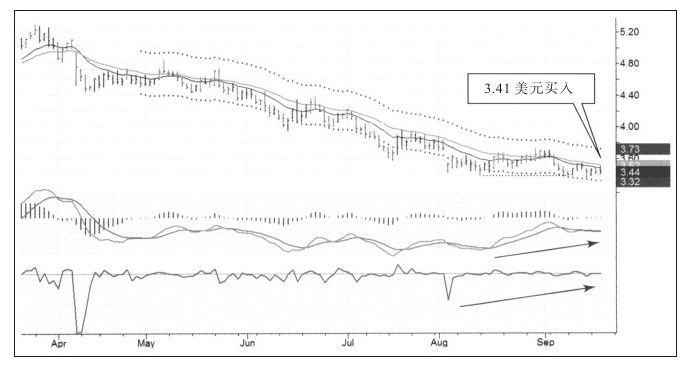
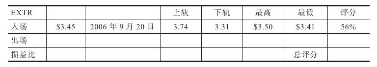
这是一次不错的入场——在当日中点之下买入，并取得56%的买入评分。在我买入后的第二天，股票走势依然很弱，并在第三天创出新低。这一定触发了市场上的一些止损盘，以此惩罚那些把止损点设在紧邻近期低点的投资者。市场总会有一些噪音，所以你应当把止损设在比关键价格更远一点的地方，这一点很重要。
买入第二周EXTR暴涨，几乎一天就涨到上轨并以接近最高价收盘，但转天进入窄幅震荡。我认为这是上涨受阻的信号，所以在3.63美元卖出（见图4-4）。从图中可以看出，市场似乎给了更多，但我选择出局。我把止盈看做工作目标，如果市场表现非常强势，我可能把止盈价向上修正，但只要市场稍露疲态，我会尽早出场。
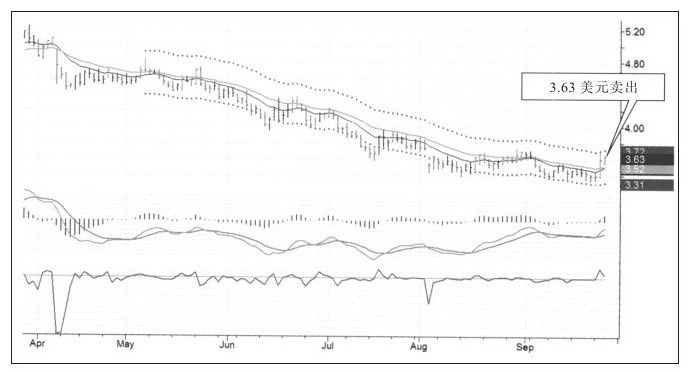
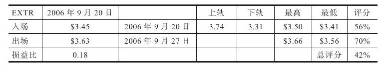
这次卖出非常不错，接近当天最高价，获得70%的出场评分。最好的是整个交易评分，18美分除以通道宽度43美分，获得42%的交易评分——A+交易，成功实现低于价值买入、价格高估时卖出的目标。
做好交易日记的一个基本意义是在月度总结时，它将你带回每一次已经完成的交易中（见图4-5）。它用后见之明的方式让你重新评估交易表现。如果持续地从经验中学习，每一天你都会比前一天更加优秀。
回想这次交易，我本应持有的时间更长一些，但当时我确实不知道哪里是市场的顶，所以必须按照既定的原则去做。知道顶和底的有两种人，一种是在历史图表上做纸上交易的人，另一种是对交易情况说谎的人。对于用真金白银做交易的交易者来说，二鸟在林不如一鸟在手。
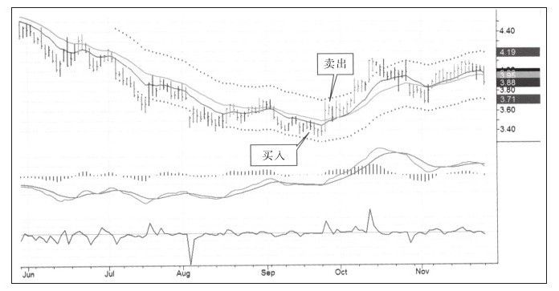
你必须开发一种让你感到舒服的交易方式，并无悔地遵循这种方式。后悔会坏了你的交易心态，如果因为那些没有赚到的钱而后悔，那你将偏离正确之路越来越远并最终失败。
期货市场的优势之一是交易品种比较少，不像股票市场上有几千只股票。周末做家庭作业时，很容易就把期货品种扫描一遍，这让我关注到了黄金市场。
如图4-6所示，图表右侧显示黄金已经在盘中跌破支撑线，但收盘在支撑线之上。我从交易训练营的常客大卫·威斯那里学到：从技术分析角度看，向下假突破是很有效的牛市信号。日线和周线系统都开始走强，表明最坏的下跌趋势结束，可以买入。
从图4-6中可以看到，几天前强力指标走出快速下跌尖角形态，这样的下跌尖角表示市场极度恐慌、多头惨败出局，市场多头被清理干净预示着市场即将见底。MACD线和MACD柱在9月和10月的双底中都发生了底背离，这就是一个强有力的买入信号。2006年10月10日我以577.80美元的价格买入12月份合约，止盈价在周线价值区附近，也就是630美元之上，止损价略低于近期最低价。
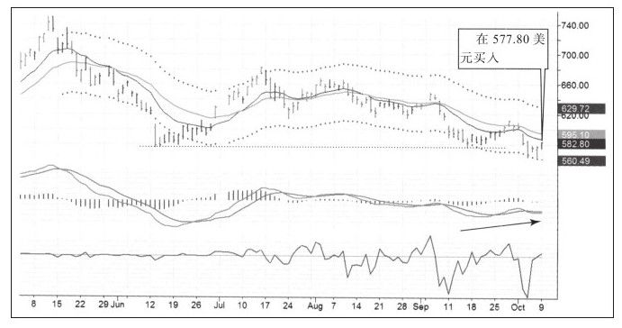
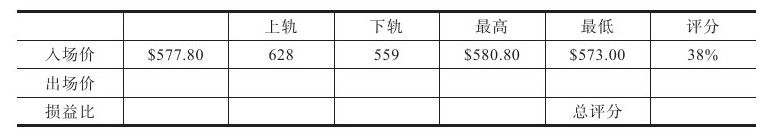
入场当天的最高价是580.80美元，最低573美元，入场评分38%——不算好的评分。我的盈利目标：慢速EMA和通道上轨之间。
我在入场后第三天也就是10月13日星期五卖出（见图4-7），从技术层面看，我不喜欢在日线图上看到价格在碰到慢速移动平均线时窄幅震荡，无论价格上穿还是下穿价值区，价值区都会是阻力区，要突破就需要强而有力地突破，窄幅震荡表示阻力比预想的要大或者上涨动力比预想的要小。我卖出的另一个动机与市场无关，因为隔周我将飞往欧洲，所以想把市场头寸降至最小，我不想持有任何可能耗费时间、精力并需要实时盯盘的头寸。但愿你不会说我在为出局找借口。
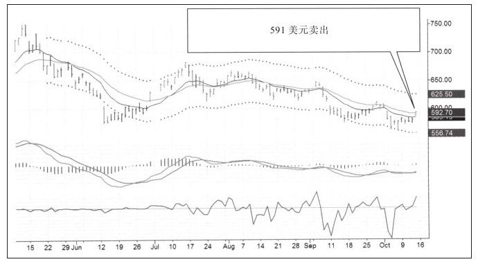
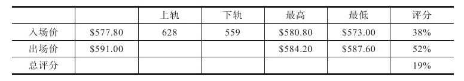
这次卖出的评分是52%，意味着我在当天中点靠上一点的地方卖出，总体交易等级是B-，因为只赚了$13.2美元，与通道差69美元相去甚远。很低的评分，不过还是给了我进步的空间。
如果没有交易日记，交易者可能在结束交易后又展开交易。交易日记让我们回顾交易的评分到底是多少。图4-8是之后两个月的黄金价格走势。
当我们回顾那些获利较少的交易时，千万要注意不要因为错失赚大钱的机会而打击自己。在我出场后四天，黄金价格创出新高，随后暴跌至我初次入场时的价格水平。日线图中，还有两次非常值得交易的波段交易机会，就是在价值之下买入在价值之上卖出，这些都是非常合理的交易。不过，要知道黄金价格刚刚从熊市中走出来，作为多头应当非常谨慎。切记，只要有怀疑就立即出场。
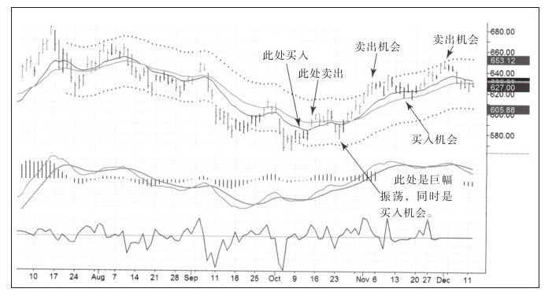
[1]三重过滤网系统是本书作者发明的交易系统。——译者注